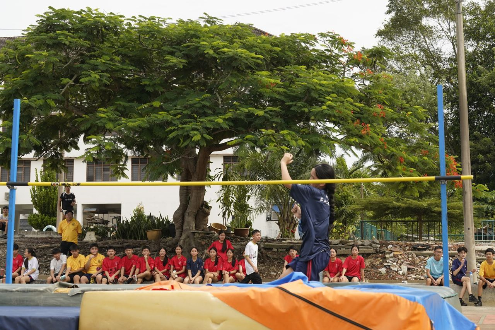
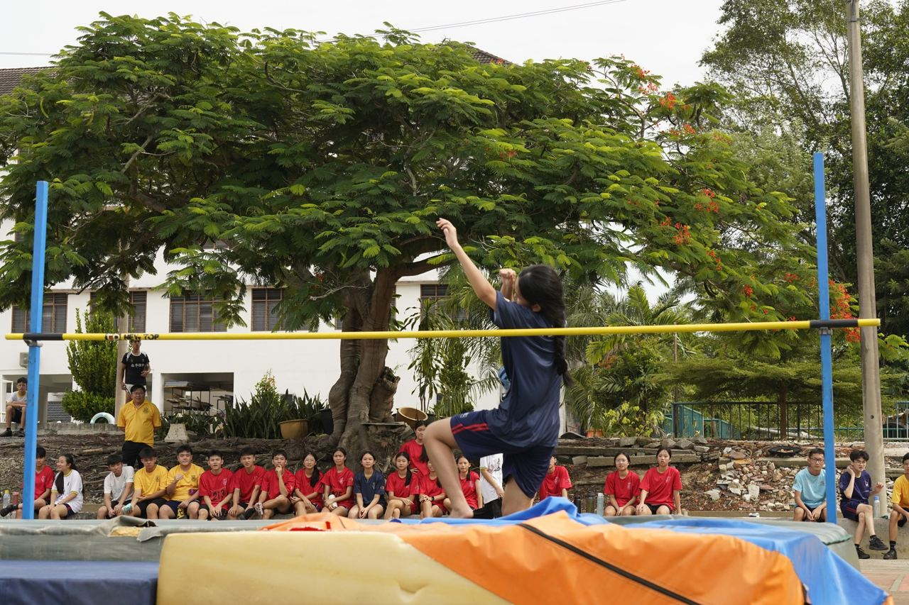
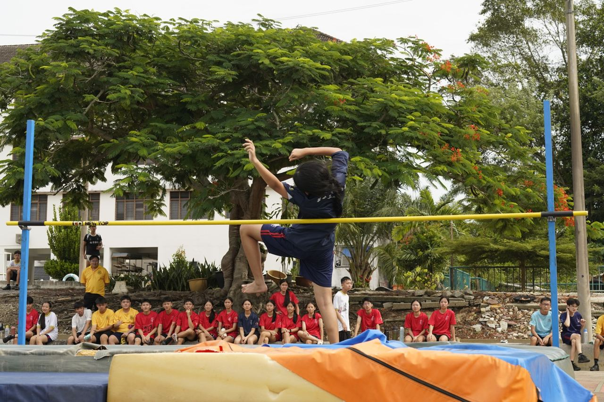
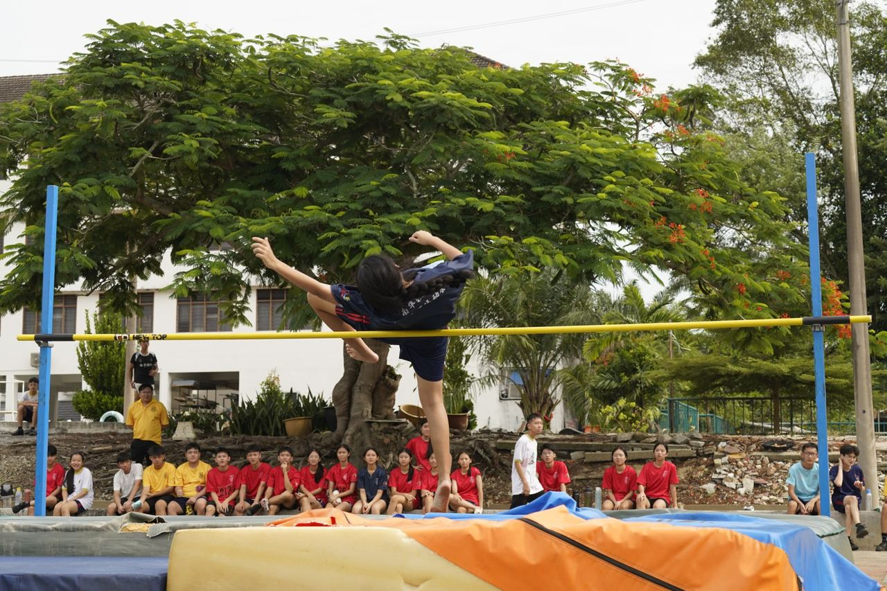
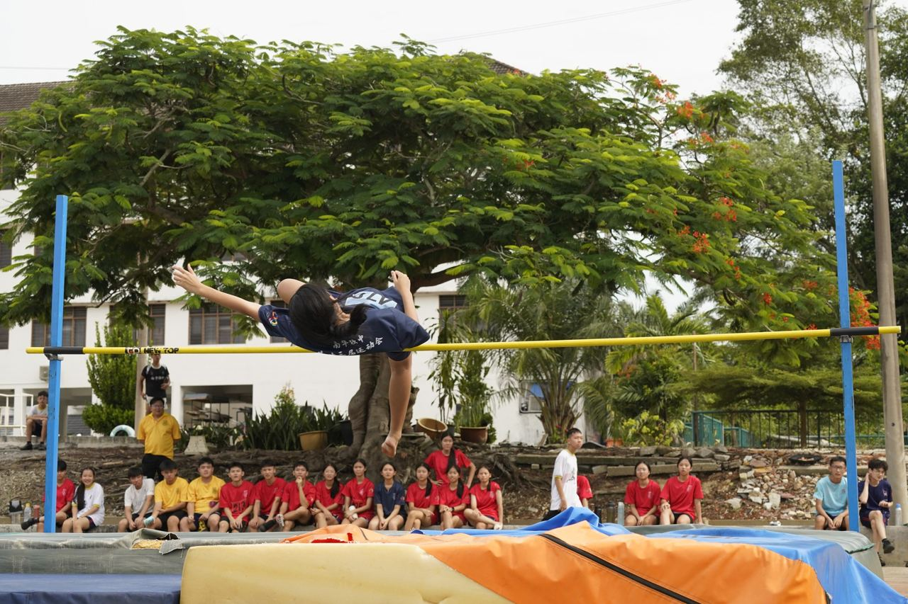
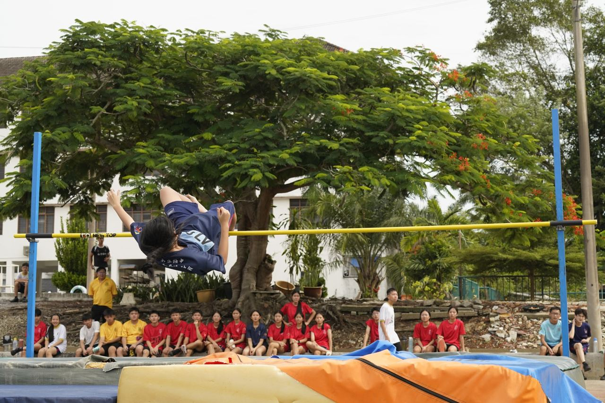
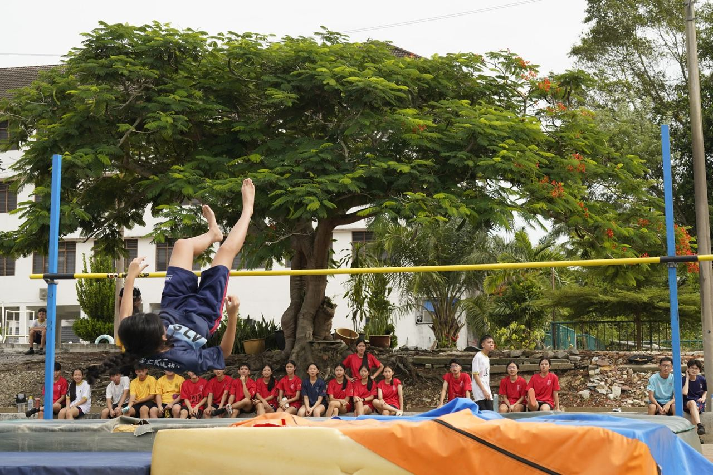
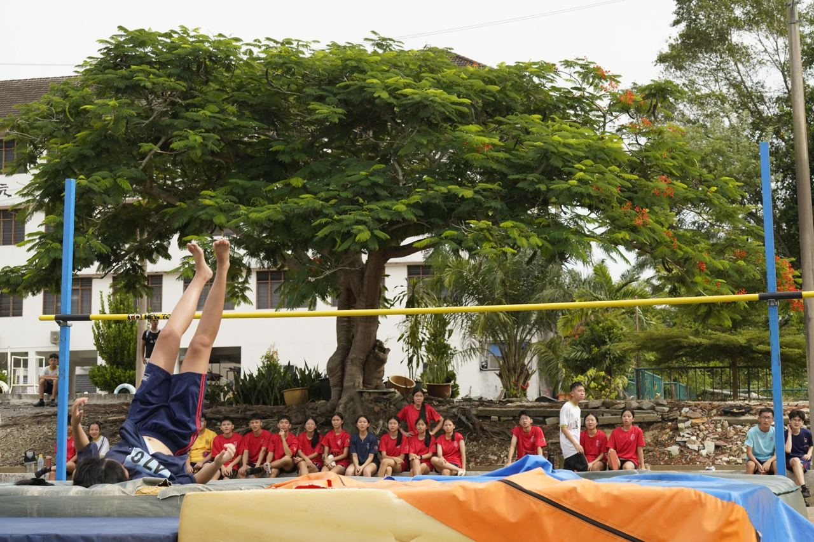

🎉 见证历史！尘封26年的校运会纪录在今天被刷新了！
🎉 见证历史！尘封26年的校运会纪录在今天被刷新了！
在今天女子乙组（13-15岁）跳高赛场上，来自蓝队的 陈佳纹 同学以 1.30米 的惊人成绩，成功打破了由黄玲媚校友在2000年创下并保持至今的 1.27米 大会纪录！🏅🔥
这珍贵的3厘米，南华等待了足足26年！跃过的是横杆，刷新的是历史！让我们一起为佳纹同学送上最响亮的掌声与欢呼！👏💙 蓝队冲呀！
#南华独中 #NanHwa #校园运动会 #跳高新纪录 #蓝队威武 #致敬传奇 #刷新历史







